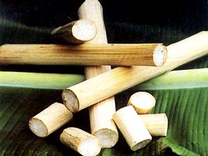

Cùng bắt tay làm thử thôi nào!
Đây là loại cơm được nấu rất đặc biệt, không phải trong nồi mà là trong ống tre, ống giang. Cũng không ninh gạo sôi sình sịch mà là nướng chín trên lửa.
Theo những người sành ăn cơm lam, thì cơm lam mỗi vùng mỗi vị, nhưng cơm lam của người Thái (huyện Mường Lò, tỉnh Yên Bái) là rất thú vị.
Người ta lấy gạo bỏ vào một chiếc ống giang một đầu hở, rồi dùng lá chuối bịt kín đặt lên lửa. Ống giang còn tươi nên khi cơm chín, hạt cơm quyện thêm một chút vị ngọt và mùi đặc trưng. Ống giang non quá hay già quá đều cho ra một mẻ cơm không đủ ngon, nên khâu chọn ống giang là rất quan trọng.
Trong quá trình "nướng cơm”, người ta phải trông chừng khá kĩ, phải xoay đi xoay lại những chiếc ống để cho chín đều. Làm một ống cơm lam không dưới một giờ đồng hồ. Những người nướng cơm lam chỉ cần ngửi mùi thơm từ ống giang bay ra là biết cơm chín hay chưa. Khi ăn, phải chẻ bỏ lớp ống đã bị cháy, rồi cắt ruột cơm ra từng khúc như cắt bánh vậy.
Người Thái Mường Lò tỉ mỉ đến từng chi tiết nhỏ cho một bữa cơm lam. Họ chú ý nướng bằng cách riêng của mình sao cho chất nhựa trong vỏ ống giang ngấm sâu vào cơm, đạt đến vị ngọt và mùi hương tự nhiên. Nước để nướng cơm cũng chính là nước trong lòng ống giang (hoặc ống nứa). Gạo thì mua tận Văn Chấn- đó là thứ gạo nếp nương Tú Lệ lừng danh. Trước khi nấu, phải ngâm gạo trong nước từ 3 đến 4 tiếng, sau đó vo sạch, rắc ít muối và trộn đều với nước gừng rồi đổ vào ống đã có sẵn nước.
Sau khi các ống đã được nút lại bằng lá chuối khô, người ta dựng chúng quanh bếp lửa, thỉnh thoảng nhấc ra dằn mạnh ống xuống đất để gạo dồn xuống phía dưới cho hạt cơm săn chắc. Nước cạn, mới đặt ống nằm ngang và nướng xoay đều.
Ăn cơm lam không quá cầu kì, có nghĩa là không cần nhiều thức ăn, vì như vậy sẽ mất đi mùi vị tự nhiên. Cơm lam thú vị nhất là ăn với muối vừng. Không phải là món ăn sơn hào hải vị nhưng cơm lam lại đượm đà hương vị của rừng núi, rất khó quên.